Chapitre 1 — Les Origines Allemandes (1883–1902)
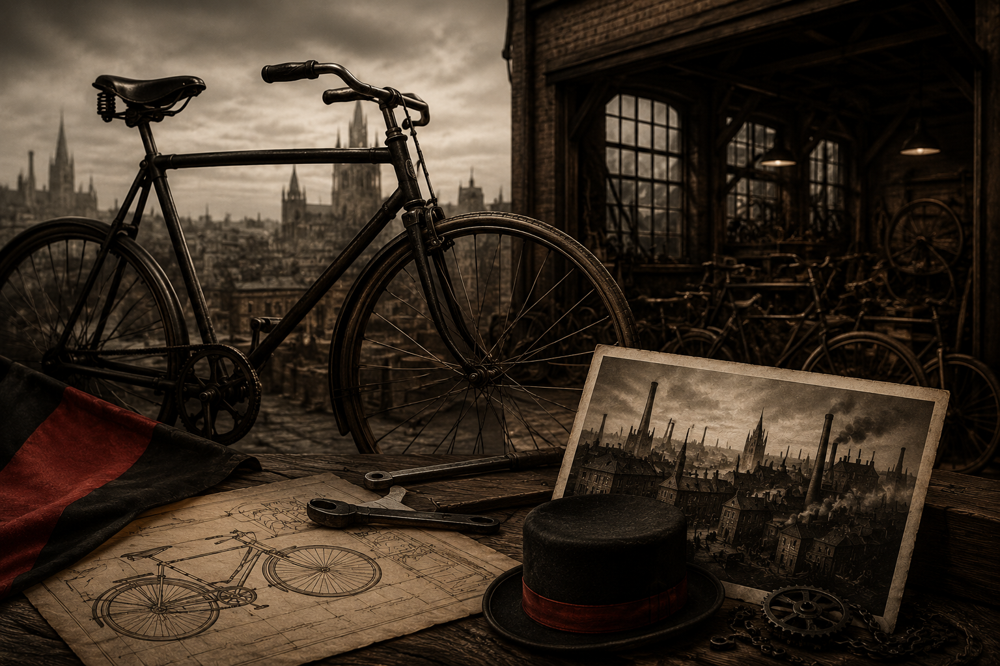
Deux hommes, une vision, une ville de cycles
L'histoire commence non pas en Angleterre, mais en Allemagne. Siegfried Bettmann naît à
Nuremberg en 1863. Jeune homme ambitieux et polyglotte, il émigre en Angleterre en 1883 et
s'établit à Londres, où il commence à travailler comme agent commercial. Il repère rapidement
une opportunité dans le marché florissant du cycle — la bicyclette est alors le symbole de la
modernité et de la liberté.
Dès 1884, Bettmann fonde la S. Bettmann & Co. et commence à importer et
revendre des vélos. Il choisit alors le nom "Triumph" — un mot identique en
anglais et en allemand, facile à retenir, porteur de victoire et d'ambition. Un choix de
génie marketing, cent quarante ans avant que le terme existe.
En 1887, il s'associe avec un compatriote : Mauritz Johann Schulte, originaire
lui aussi d'Allemagne. Les deux hommes transfèrent leur activité à Coventry,
alors capitale mondiale de l'industrie du cycle. La ville grouille d'ateliers, de mécaniciens,
d'inventeurs. C'est le terreau idéal pour ce qui va devenir une légende.
En 1889, la société est rebaptisée officiellement Triumph Cycle Co. Ltd. Les
affaires prospèrent. Triumph produit des bicyclettes de qualité, exportées dans toute l'Europe
et au-delà. Mais Bettmann regarde plus loin. Il voit ce nouveau jouet mécanique qui commence
à faire parler de lui dans les rues d'Europe : le motocycle.
Chapitre 2 — La Naissance d'une Moto (1902–1914)
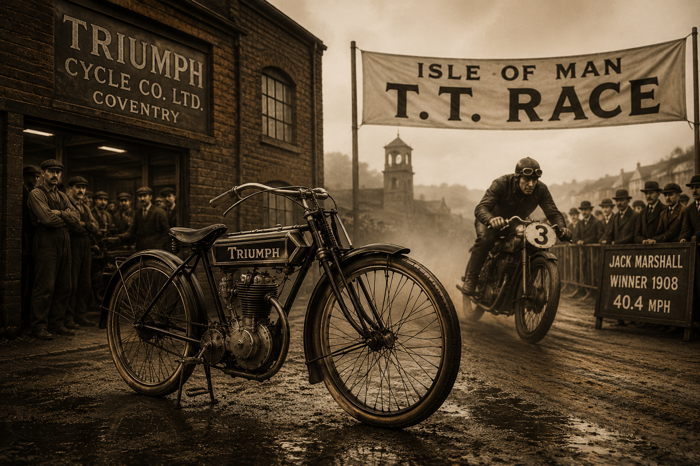
Du pédalier au moteur : Triumph entre dans l'ère mécanique
En 1902, Triumph franchit le pas décisif. Les ingénieurs de la marque montent
un moteur Minerva de 2,25 chevaux, fabriqué en Belgique, sur un cadre de
bicyclette renforcé. La première moto Triumph est née. Elle est rudimentaire, bruyante,
capricieuse — mais elle roule, et elle captive.
L'année suivante, en 1903, Triumph commence à développer ses propres moteurs.
Un monocylindre de 363 cm³, puis rapidement un 499 cm³. La
philosophie est déjà là : construire les pièces en interne, maîtriser la qualité, ne pas
dépendre des fournisseurs étrangers.
En 1907, un événement marque les esprits : la toute première édition du
Tourist Trophy de l'île de Man. Cette course sur route devient rapidement
l'épreuve de référence mondiale pour les constructeurs. Triumph y participe avec ses machines,
et en 1908, Jack Marshall remporte la première grande victoire
de la marque au TT, couvrant le circuit à une moyenne impressionnante de 40,4 mph
(environ 65 km/h) — une performance remarquable pour l'époque.
La réputation sportive de Triumph est lancée. Les commandes affluent. En 1910, l'usine de
Coventry produit déjà 3 000 motos par an. La marque est en pleine expansion
quand éclate la Première Guerre mondiale.
Chapitre 3 — La Guerre, la Gloire et les "Trusty Triumph" (1914–1939)
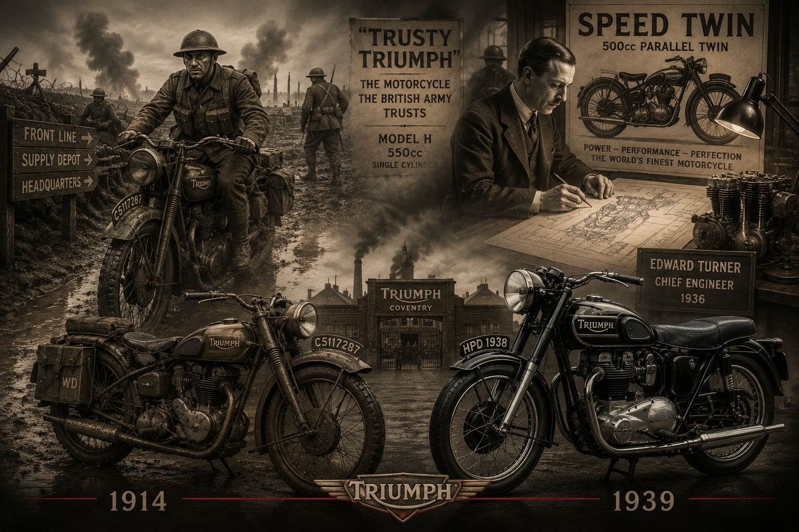
Quand les motos britanniques partent au front
En 1914, l'armée britannique réquisitionne l'industrie moto. Triumph répond
présent avec l'une de ses machines les plus fiables : le Model H, équipé d'un
monocylindre 550 cm³. Ce modèle va devenir légendaire sous le surnom affectueux de
"Trusty Triumph" — "la Triumph fiable". Un surnom qui dit tout.
Pendant les quatre années du conflit, Triumph livre pas moins de 30 000 motos
à l'armée britannique et à ses alliés. Ces machines servent à transporter les dépêches,
accompagner les convois, assurer les liaisons entre les états-majors et le front. Dans la
boue des tranchées, sous les obus, par tous les temps, les "Trusty" ne lâchent pas. Les soldats
leur font une confiance aveugle.
À la fin de la guerre, la réputation de Triumph est solidement établie non seulement en
Grande-Bretagne, mais dans le monde entier. Les ex-combattants américains, australiens,
canadiens, qui ont côtoyé ces machines pendant quatre ans, rentrent chez eux avec une
admiration profonde pour la moto britannique.
L'entre-deux-guerres : la montée en puissance d'Edward Turner
Les années 1920 sont difficiles. La concurrence est rude, la demande fluctue, et Bettmann,
vieillissant, peine à moderniser la marque. En 1936, un homme providentiel
entre en scène : Edward Turner, ingénieur de génie et visionnaire absolu.
Turner prend la direction technique de Triumph et frappe fort dès son arrivée. Il dessine en
un temps record le Speed Twin, un bicylindre parallèle de 500 cm³
lancé en 1938. Ce moteur va littéralement changer l'histoire de la moto.
Le bicylindre parallèle de Turner est compact, léger, puissant, et visuellement séduisant.
Il tient dans un cadre monocylindre, ce qui donne à la moto une silhouette fine et agile.
Avec 29 chevaux et une vitesse de pointe dépassant les 160 km/h,
le Speed Twin surpasse tout ce qui existe alors sur le marché. La concurrence est K.O.
Les autres constructeurs britanniques — BSA, Norton, AJS — vont passer les années suivantes
à copier ce moteur. L'architecture bicylindre parallèle devient le standard de toute une
industrie.
Chapitre 4 — L'Âge d'Or : Bonneville, Hollywood et la Conquête de l'Amérique (1945–1970)
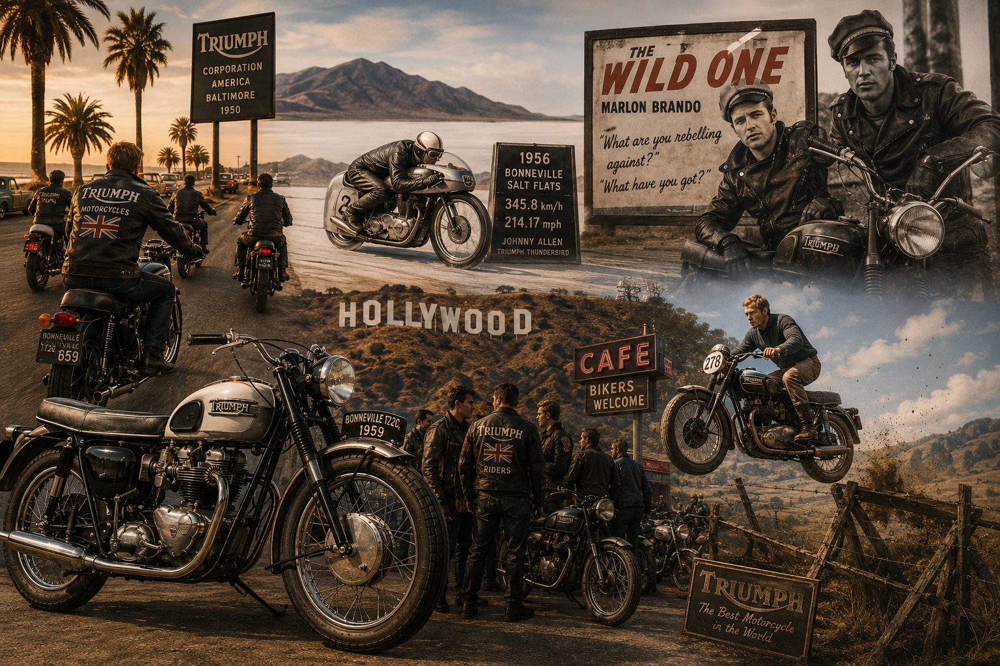
Le rugissement britannique traverse l'Atlantique
La Seconde Guerre mondiale suspend à nouveau la production civile. Mais dès 1945,
Triumph relance la machine à pleine vitesse. L'Angleterre est exsangue, mais les motos
partent conquérir le monde — et notamment les États-Unis, où une jeunesse avide de liberté
et d'adrénaline attend de pied ferme.
En 1950, Triumph ouvre une filiale américaine, la Triumph Corporation,
basée à Baltimore. L'Américain Johnson Motors assure la distribution sur la
côte Ouest. Les Triumph envahissent les routes de Californie, les déserts du Nevada, les
circuits improvisés sur les parkings désaffectés. La moto britannique devient un symbole
de rébellion et de style.
1953 — "The Wild One" : la moto comme icône culturelle
En 1953, le film L'Équipée Sauvage (The Wild One) sort sur les
écrans américains. Marlon Brando y joue Johnny Strabler, chef d'un gang de
motards, chevauchant une Triumph Thunderbird 6T. Quand une fille lui demande
"Contre quoi tu te rebelles ?", il répond simplement "Qu'est-ce que t'as à proposer ?"
Cette réplique et cette image — Brando en veste de cuir sur sa Triumph — deviennent l'une
des icônes absolues du XXe siècle. Les ventes de Triumph s'envolent aux États-Unis. La moto
n'est plus seulement un moyen de transport, c'est un style de vie, une attitude, un manifeste.
1956 — Johnny Allen et le record de Bonneville
Le 26 septembre 1956, sur les célèbres Salins de Bonneville
dans l'Utah (États-Unis), le pilote américain Johnny Allen propulse sa
Triumph Thunderbird préparée à 345,8 km/h (214,17 mph).
Un nouveau record mondial de vitesse pour une moto.
En hommage à cet exploit et à ce lieu mythique, Triumph baptise en 1959 son
nouveau modèle phare : la Bonneville T120. Ce nom résonne encore aujourd'hui
comme l'un des plus beaux de toute l'histoire de la moto.
La Bonneville T120 — La moto la plus belle du monde ?
La Bonneville T120 est lancée avec un bicylindre parallèle de 649 cm³,
deux carburateurs Amal, et une puissance de 46 chevaux. Elle atteint les
190 km/h en version standard — une performance époustouflante pour l'époque.
Sa ligne est parfaite : réservoir en goutte d'eau, selles en tandem, guidon plat, silhouette
élancée. Sobre, puissante, équilibrée.
La Bonneville devient instantanément la moto de référence mondiale. Elle domine les courses,
bat des records, et se retrouve dans les garages des pilotes, des artistes et des rebelles
du monde entier.
1963 — Steve McQueen, la Grande Évasion et l'immortalité
En 1963, le film La Grande Évasion (The Great Escape) consacre
définitivement le mariage entre Triumph et la culture populaire mondiale. Steve McQueen,
passionné de moto dans la vie comme à l'écran, chevauche une Triumph TR6 Trophy
repeinte aux couleurs allemandes pour les besoins du film.
La scène du saut de barbelés est restée dans toutes les mémoires. McQueen, cascadeur dans
l'âme, effectue lui-même une grande partie des acrobaties. Ce plan de quelques secondes est
devenu l'une des images les plus reproduites de l'histoire du cinéma. Et derrière McQueen,
il y a toujours cette Triumph, musclée, grondante, irrésistible.
Dans la vraie vie, McQueen possède une collection impressionnante de Triumph. Il les pilote
le week-end, les entretient lui-même, les modifie. Sa passion pour la marque est totale et
sincère. Cet homme-là ne fait pas semblant.
Chapitre 5 — La Chute et le Désastre (1970–1983)
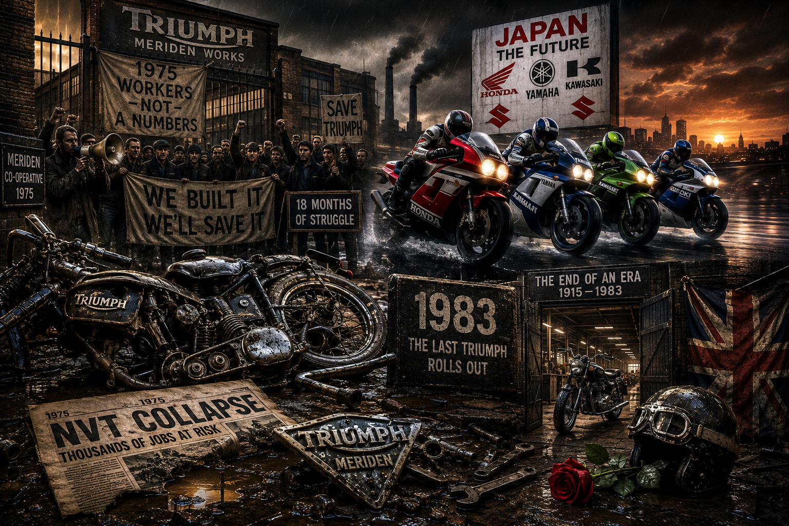
Quand l'Empire du Soleil Levant éteint les lumières de Coventry
La fin des années 1960 marque le début d'une période sombre. Depuis le Japon, Honda, Yamaha,
Kawasaki et Suzuki déferlent sur le marché mondial avec des machines modernes, fiables,
performantes et bien moins chères. L'industrie moto britannique, figée dans ses habitudes,
ses structures archaïques et ses conflits sociaux, est prise de vitesse.
En 1973, la crise pétrolière aggrave la situation. Les ventes chutent. Les
coûts de production explosent. Les grèves se multiplient dans les usines. Triumph, BSA et
Norton sont regroupés dans le holding NVT (Norton Villiers Triumph) en
1972, une tentative désespérée de rationalisation qui ne fera que retarder
l'inévitable.
En 1975, le gouvernement britannique refuse de continuer à financer NVT.
C'est la catastrophe. Les ouvriers de Triumph à Meriden (où l'usine avait
été déplacée depuis Coventry) réagissent d'une manière spectaculaire : ils occupent l'usine
pendant dix-huit mois dans un sit-in historique, refusant de la voir fermer.
Cette résistance ouvrière, passionnée et désespérée, aboutit à la création d'une
coopérative ouvrière en 1975. Les ouvriers eux-mêmes reprennent le contrôle
et tentent de relancer la production.
C'est un exploit humain remarquable. Mais la coopérative se bat contre des vents contraires
trop violents : manque de capitaux, modèles vieillissants, concurrence japonaise implacable.
En 1983, après huit ans de lutte héroïque, la coopérative de Meriden ferme
définitivement ses portes. La dernière Triumph sort de la chaîne. Une page se tourne.
L'industrie moto britannique, qui avait dominé le monde pendant un demi-siècle, s'éteint.
L'Angleterre pleure. Les passionnés du monde entier pleurent. Mais l'histoire n'est pas
terminée. Elle ne fait que marquer une pause.
Chapitre 6 — La Résurrection : John Bloor et le Miracle de Hinckley (1983–2000)
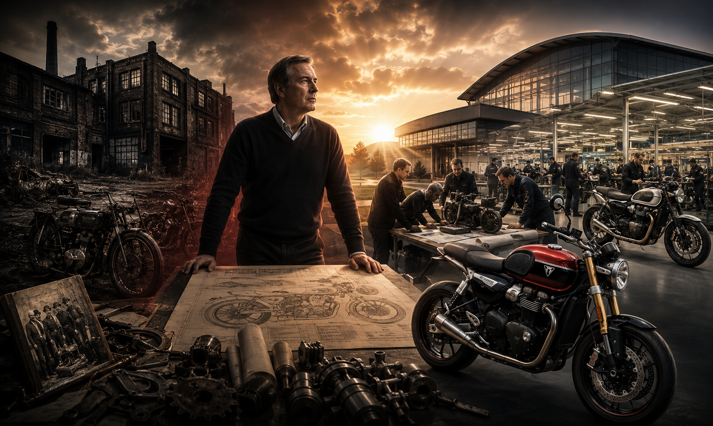
Un promoteur immobilier sauve la légende britannique
En 1983, au moment même où la coopérative de Meriden s'effondre, un homme
intervient discrètement. John Bloor, promoteur immobilier millionnaire et
passionné de moto, rachète la marque Triumph pour la somme symbolique de 150 000 livres
sterling. Il acquiert le nom, les droits, mais aussi le défi colossal qui va avec.
Pendant huit ans, Bloor travaille dans le plus grand secret. Il visite les
usines japonaises pour en étudier les méthodes de production. Il recrute les meilleurs
ingénieurs. Il investit ses propres deniers — on parle de 80 millions de livres
au total — sans demander un penny de subvention publique. Il construit une usine ultramoderne
à Hinckley, dans le Leicestershire. Il repart de zéro, mais avec l'ambition
de faire mieux que jamais.
En 1990, la renaissance est officielle. Triumph présente au salon de
Cologne une toute nouvelle gamme de motos : six modèles, tous dotés de moteurs
trois cylindres en ligne (une singularité qui deviendra la signature technique
de la marque) et de bicylindres parallèles. Ces machines modernes, fiables, sophistiquées,
montrent que le lion britannique est bien vivant.
Le monde de la moto est stupéfait et ravi. La presse spécialisée accueille le retour de
Triumph avec un enthousiasme débordant. Les premières machines sortent des chaînes de Hinckley
en 1991. Les commandes affluent. Le pari insensé de Bloor est en train de
réussir.
1995 — La Bonneville revient
En 1995, Triumph annonce le retour de l'un des noms les plus chargés
d'histoire dans le monde de la moto. La nouvelle Thunderbird, puis en
2001 la nouvelle Bonneville, dans un style néo-rétro
assumé, réconcilie modernité et tradition. Ces motos ressemblent à leurs ancêtres, mais
embarquent une technologie contemporaine : injection électronique, ABS, cadre en acier
tubulaire optimisé.
La pari esthétique est gagné : les passionnés d'hier et les néophytes d'aujourd'hui craquent
pour ces machines qui sentent le cuir, la nostalgie et la liberté. Triumph a réussi quelque
chose d'extraordinaire : vendre du présent avec les codes du passé.
Chapitre 7 — La Triumph du XXIe Siècle : Sport, Aventure et Prestige (2000–aujourd'hui)
De Hinckley au sommet du monde
Les années 2000 marquent la confirmation définitive du retour de Triumph au premier plan mondial.
La marque développe une gamme impressionnante qui couvre tous les segments du marché : roadsters,
sportives, trails, cruisers, café-racers. Chaque modèle porte en lui l'ADN Triumph — ce mélange
de caractère, de style et de performances qui ne ressemble à rien d'autre.
Le Daytona 675 — La sportive qui a électrifié le monde
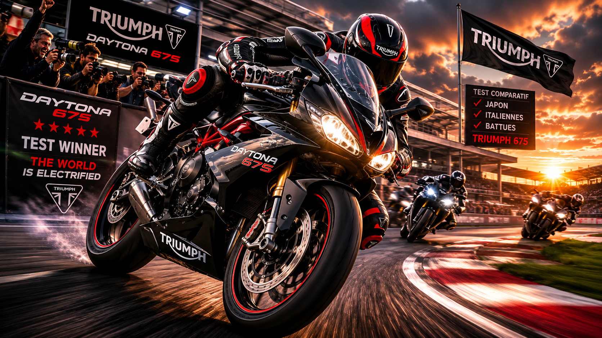
En 2006, Triumph lance le Daytona 675, une supersportive
trois cylindres de 675 cm³ développant 123 chevaux. C'est
une bombe. Les journalistes spécialisés n'en reviennent pas : ce trois cylindres produit une
sonorité unique, à mi-chemin entre le bicylindre charnu et le quatre cylindres aigu des
machines japonaises. Les courbes sont affûtées comme une lame. Les sensations sont hors norme.
Le Daytona 675 remporte les tests comparatifs les uns après les autres, humiliant régulièrement
des concurrentes japonaises et italiennes pourtant très bien établies. C'est le symbole parfait
du nouveau Triumph : une marque qui n'a pas peur de se mesurer aux meilleurs.
La Street Triple — La bête quotidienne
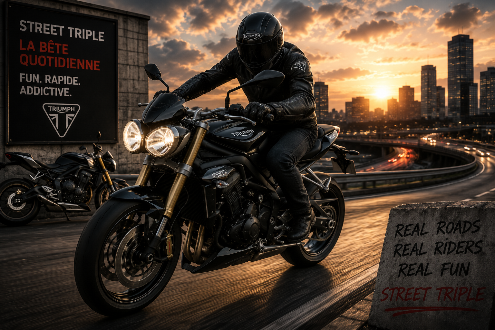
Dans la foulée du Daytona, Triumph lance la Street Triple en 2007.
Même moteur trois cylindres, mais dans un habillage roadster : plus légère, plus maniable,
plus polyvalente. La Street Triple devient instantanément l'une des motos les plus populaires
d'Europe. Elle est rapide, fun, accessible, et irrémédiablement addictive. Sa gueule avec
ses deux grands yeux ronds est immédiatement reconnaissable. Elle se vendra à des centaines
de milliers d'exemplaires et restera au catalogue en évoluant constamment.
Le Tiger — La reine de l'aventure
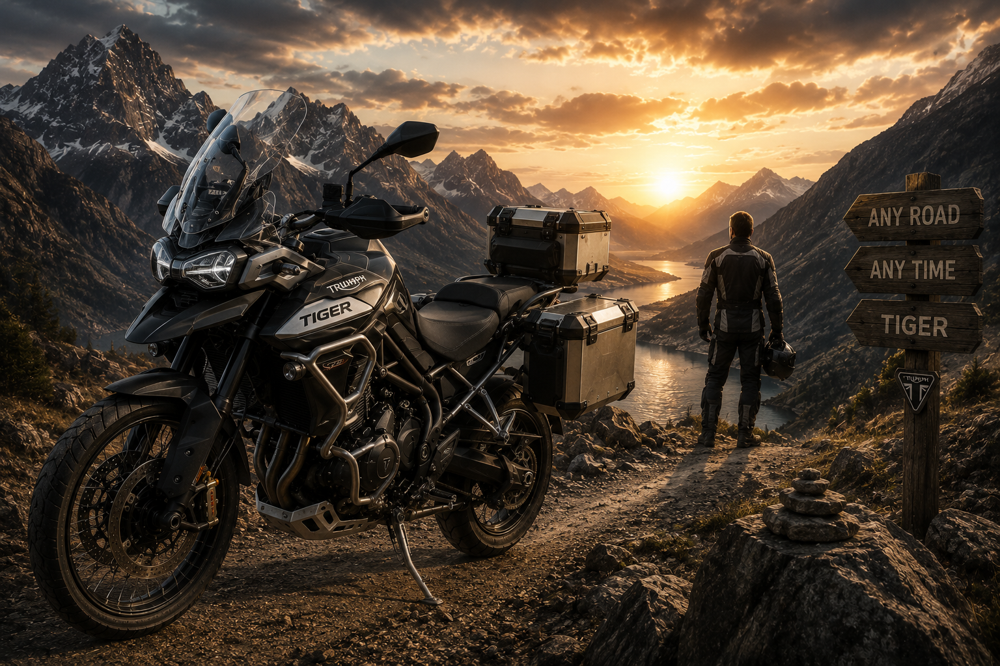
La famille Tiger de Triumph s'impose comme l'une des références absolues
du segment des trails routiers. Du Tiger 800 au titanesque Tiger 1200,
ces machines polyvalentes parcourent aussi bien les autoroutes que les pistes de montagne.
Elles sont prisées par les voyageurs du monde entier qui cherchent une moto capable de tout
endurer sans jamais perdre son âme.
La Rocket 3 — Le monstre aux records
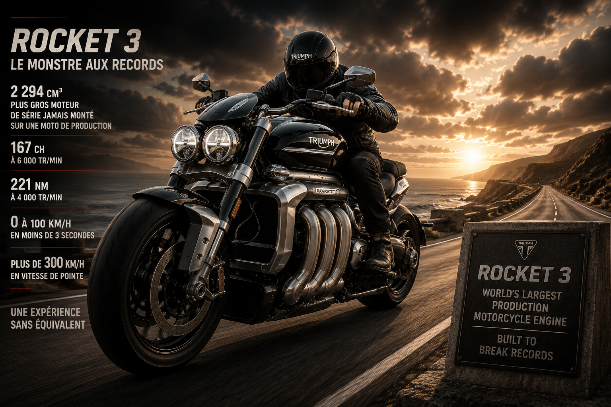
En 2004, Triumph frappe un grand coup avec la Rocket III,
un cruiser équipé d'un moteur trois cylindres de... 2 294 cm³. Oui, vous
avez bien lu. Presque 2,3 litres de cylindrée. C'est à ce jour le plus gros moteur de série
jamais monté sur une moto de production. La Rocket III entre dans les livres de records et
dans les légendes. Sa version moderne, la Rocket 3 R, développe
167 chevaux et un couple stratosphérique de 221 Nm. Une
expérience de conduite sans équivalent sur cette terre.
Le MotoGP et la compétition internationale
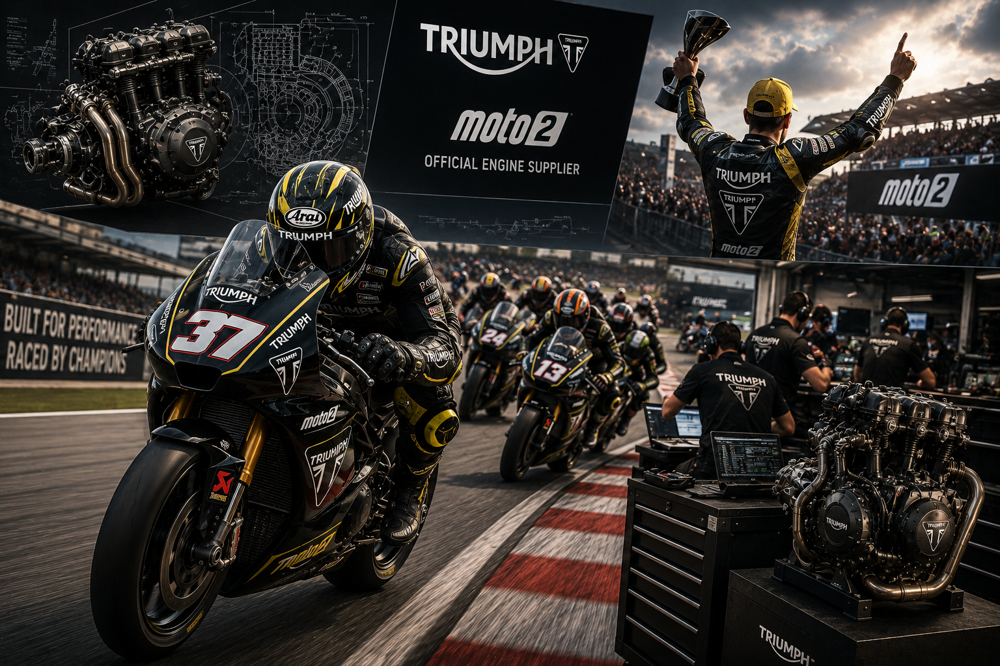
Triumph ne se contente pas de construire de belles machines pour la route. La marque
s'est engagée en MotoGP comme motoriste officiel de la classe
Moto2 depuis 2019. Un moteur trois cylindres de
765 cm³, dérivé directement de la Street Triple RS, propulse les machines
de la grille Moto2. Cet engagement en compétition internationale est la preuve que Triumph
n'a pas oublié ses racines sportives et qu'elle entend continuer à se battre au plus haut
niveau.
Chapitre 8 — Triumph et la Culture : Plus qu'une Moto, un Mode de Vie
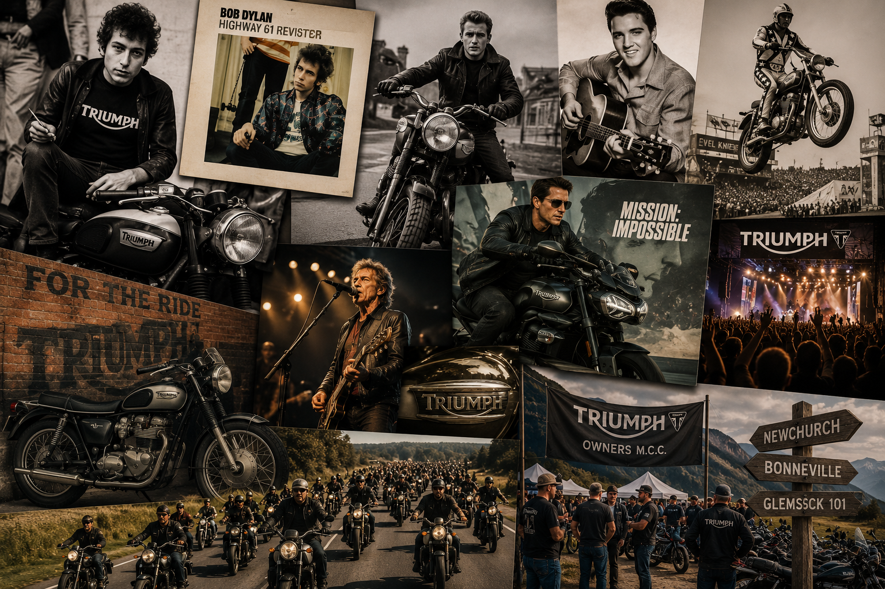
Du cinéma au rock, la marque qui a façonné la coolitude
Peu de marques dans l'histoire ont réussi à s'inscrire aussi profondément dans la culture
populaire mondiale. Triumph n'est pas seulement présente dans les garages — elle est dans
les films, dans les musiques, dans les esprits.
Bob Dylan roule en Triumph. La pochette de son album Highway 61 Revisited
(1965) le montre portant un t-shirt Triumph. Elvis Presley possède plusieurs
Triumph et en fait don à ses amis. James Dean est photographié sur sa
Triumph Thunderbird. Clint Eastwood, Paul Newman,
Evel Knievel — la liste des amoureux de la marque ressemble à un panthéon
du cool américain.
Plus récemment, Tom Cruise roule en Triumph dans la saga Mission Impossible.
La marque signe des partenariats avec des films, des artistes, des festivals. Elle n'a pas
vieilli — elle a évolué, traversant les décennies sans perdre son âme.
Le Triumph Club et les nombreuses communautés de propriétaires à travers le
monde entretiennent cette flamme. Les rassemblements Triumph, de Newchurch à Bonneville en
passant par le Glemseck 101 en Allemagne, sont des moments de communion où des milliers de
passionnés célèbrent ensemble leur amour d'une marque qui leur ressemble : libre, authentique,
et un peu rebelle.
Épilogue — L'Âme Triumph
Plus de cent trente ans après les premiers coups de pédale de Siegfried Bettmann dans les rues
de Coventry, Triumph Motorcycles est toujours debout. Mieux : elle est plus forte, plus
admirée et plus désirée que jamais. L'usine de Hinckley produit aujourd'hui des dizaines de
milliers de motos par an, expédiées dans plus de 55 pays. Une nouvelle
usine a même été construite en Thaïlande pour répondre à la demande
asiatique croissante.
Mais au-delà des chiffres, ce qui définit Triumph, c'est quelque chose d'indéfinissable.
C'est le son particulier de ce trois cylindres qui gronde à bas régime et hurle à pleine
charge. C'est la sensation d'enfourcher une Bonneville et de se sentir connecté à soixante
ans d'histoire. C'est voir le logo de la marque et penser immédiatement à Brando, McQueen,
aux salins de Bonneville, aux rues de Londres sous la pluie.
Triumph n'est pas parfaite. Elle a connu des abîmes. Elle a failli disparaître. Mais elle
est revenue, plus forte et plus belle. Et c'est peut-être pour cela qu'on l'aime autant :
parce qu'elle a une âme, une vraie, façonnée par les épreuves et par la passion de ceux
qui ont refusé de la laisser mourir.
For the Ride.